| HOME | DOWNLOAD | DOCUMENTATION | FORUM | FAQ |
> Home > Documentation
Real Spherical Harmonics
"Geodesy" 4π-normalized real spherical harmonics
Any real square-integrable function can be expressed in spherical harmonics as
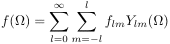where flm is the spherical harmonic coefficient, Ylm is the spherical harmonic function, Ω represents position on the sphere in terms of co-latitude θ and longitude φ, and l and m are the spherical harmonic degree and order, respectively. (It is common to refer to the positive order coefficient as Clm, and the negative order coefficient as Slm, in reference to the "cosine" and "sine" coefficients, respectively.) The real spherical harmonics are defined as

where the normalized associated Legendre functions, as used in geodesy and gravity applications (calculated by the routine PlmBar), are given by

with the following definition for the unnormalized associated Legendre functions:
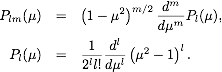.The normalized associated Legendre functions are orthogonal for a given value of m,
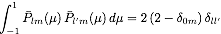.The normalized Legendre functions (including the orthonormalized and Schmidt semi-normalized functions) are efficiently calculating using the algorithm of Holmes and Featherstone (2002, J. Geodesy, 76, 279-299) that is accurate to approximately degree 2800. Note that the above definition of the associated Legendre functions does not include the Condon-Shortley phase of (-1)m that is often employed in the physics and seismology communities (e.g., Varsalovich et al., 1988; Dahlen and Tromp, 1998). This can be included by specifying the optional argument CSPHASE=-1 in most of the Legendre and spherical harmonic routines. (Alternatively, the default phase convention can be modified during compilation of the SHTOOLS archive.)
The spherical harmonics are orthogonal over both l and m with the normalization
 .
.
Using this relationship, it is straightforward to show that the spherical harmonic coefficients of a function can be calculated by the integral
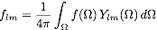.The cross-power of two functions f and g is equal to
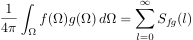,where the "cross-power spectrum" of the two functions is given by
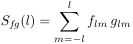.If the functions f and g have a zero mean, then Sfg is the contribution to the covariance as a function of spherical harmonic degree.
Other real normalization conventions
The above 4π normalization scheme is the default for all routines in SHTOOLS with the exception of MakeMagGrid2D, which uses the standard geomagnetism Schmidt semi-normalization. By specifying an optional parameter norm, the default normalization can be changed in most of the routines (e.g., PreCompute, MakeGridGLQ, SHExpandGLQ, SHExpandDH, MakeGrid2D, MakeGridPoint, SHMultiply and SHExpandLSQ). The following normalizations are permitted:
- norm=1: Geodesy 4π normalization (default, unless stated otherwise).
- norm=2: Schmidt semi-normalization.
- norm=3: Unnormalized.
- norm=4: Orthonormalized.
Explicit expressions for the Legendre functions and real spherical harmonic normalizations are the following:
Geodesy 4π
Schmidt semi-normalized
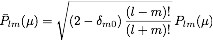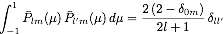
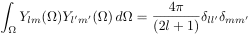
Unnormalized


Orthonormalized

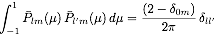
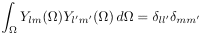
Further information
Further information regarding spherical harmonic functions can be found at the following web sites:
> Home > Documentation
| Institut de Physique du Globe de Paris | University of Sorbonne Paris Cité | © 2014 Mark Wieczorek |